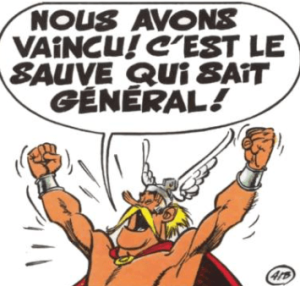
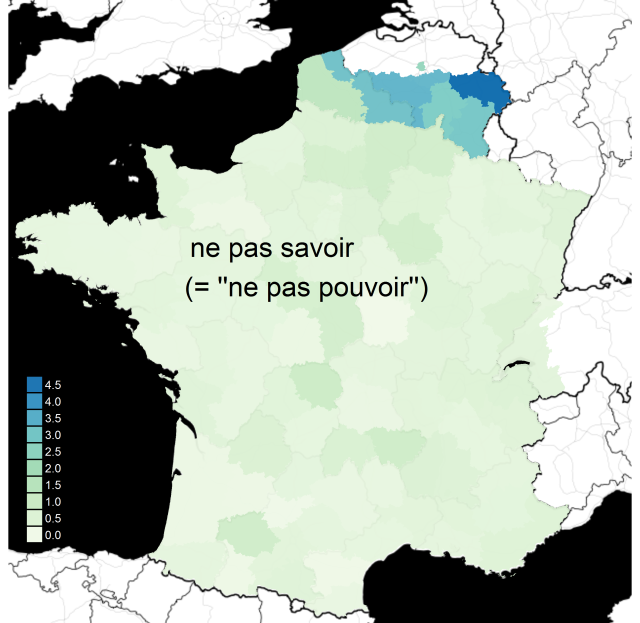
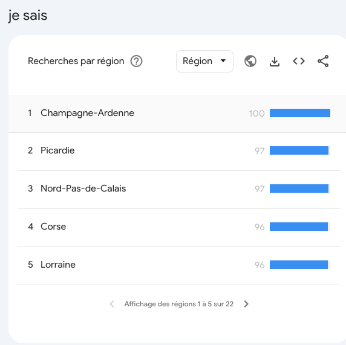
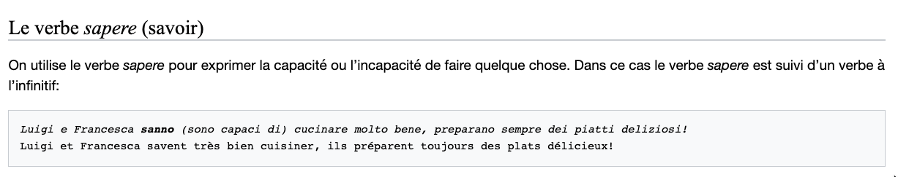
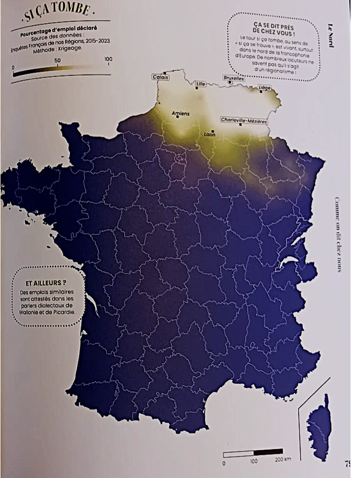
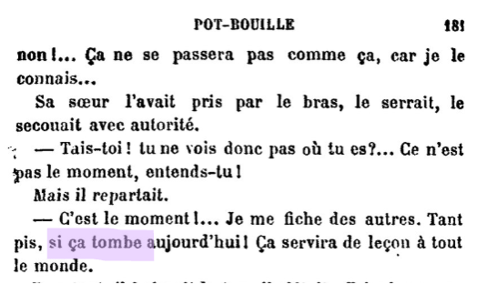
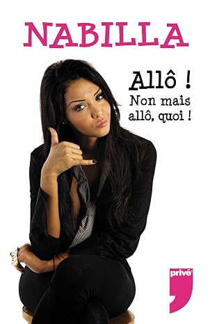

Le français en Belgique
8.1 La situation linguistique en Belgique
8.1.1 L’unilinguisme territorial
- L’unilinguisme territorial (parfois appelé droit du sol) impose – dans la sphère publique – :
- le néerlandais dans la région de langue néerlandaise ;
- le français dans la région de langue française ;
- l’allemand dans la région de langue allemande.
- Une quatrième « région linguistique », Bruxelles-Capitale, géographiquement enclavée en territoire flamand, bénéficie d’un statut bilingue.
- Dans l’actuel « modèle institutionnel » belge, aucune langue n’est « nationale ».
8.1.2 La population
- À la création de l’État belge, les Wallons représentaient 39,7 % de la population belge.
- En 2016, sur une population totale de 11 267 910 habitants :
- Flandre : 6 477 804 habitants (58 %)
- Wallonie : 3 602 216 habitants (32 %)
- Région de Bruxelles-Capitale : 1 187 890 habitants (10 %)
8.1.3 Les conséquences de l’unilinguisme territorial
8.1.3.1 En Wallonie 🐓
- Un monolinguisme très répandu chez les individus.
- Les immigrés :
- majoritairement d’origine italienne au lendemain de la Seconde Guerre mondiale ;
- aujourd’hui essentiellement d’origine française, maghrébine, turque et africaine subsaharienne.
- Leur intégration se fait en français, déjà pratiqué par certains et relativement familier pour d’autres.
8.1.3.2 À Bruxelles 🌼
- La diversité culturelle et ethnique favorise un plurilinguisme de fait.
- Le français garde le statut de langue de l’intercompréhension dans la capitale.
- L’anglicisation de Bruxelles est régulièrement évoquée.
8.1.3.3 En Flandre 🦁
- Quelques centaines de milliers de francophones, domiciliés :
- dans quelques communes proches de la frontière linguistique ;
- dans des communes de la périphérie de Bruxelles, qui jouissent d’un statut linguistique spécial instauré en [1963] 🔎.
- Des Flamands « de souche », issus de milieux urbains favorisés, qui ont perpétué la tradition de la pratique familiale du français.
8.2 Historique
8.2.1 Les dialectes d’oïl en Belgique
- Dans l’ensemble du domaine d’oïl, l’étiolement du latin a abouti à une fragmentation dialectale ; en Belgique :
- le wallon ;
- le picard ;
- le lorrain (appelé gaumais en Belgique) ;
- le champenois (Remacle 1992).
- Ces dialectes sont les continuateurs directs du latin vulgaire :
- avec des vestiges du celte parlé par les Gaulois ;
- et des emprunts aux parlers germaniques proches.
8.2.2 Les scriptae médiévales
Productions littéraires, juridiques ou savantes qui apparaissent au Moyen Âge. Elles sont hétérogènes du point de vue linguistique : elles associent des formes « françaises » – celles du parler d’Île-de-France – à des formes originaires d’une autre région.
- C’est ce qui permet d’associer au territoire de l’actuelle Wallonie :
- les premiers « monuments littéraires » hagiographiques :
- la Séquence (ou Cantilène) de sainte Eulalie (vers 882) ;
- le Sermon sur Jonas (Xe siècle) ;
- la Vie de saint Léger (Xe siècle) ;
- la Charte-Loi de Chièvres (Hainaut), de 1194 : le premier document administratif daté du domaine d’oïl.
- les premiers « monuments littéraires » hagiographiques :
La Wallonie participe très tôt au développement de la « langue rustique romane » dans le domaine d’oïl.
8.2.3 Français et langues régionales
- Coexistence entre :
- le français, très tôt introduit dans les milieux urbains favorisés ;
- les continuateurs endogènes du latin, pratiqués par l’ensemble de la population (Francard 2012 ; 2013, 43 ss.).
- Dans cette coexistence, le français prend progressivement le dessus.
- À partir du XVIIe siècle, la coexistence devient diglossique :
- le français est réservé aux communications formelles ;
- les langues régionales sont progressivement confinées aux relations informelles, familiales ou entre pairs.
- L’instauration de l’enseignement primaire obligatoire entraîne l’apprentissage généralisé du français, accompagné de l’éradication des langues régionales.
Cette étape est plus tardive en Wallonie qu’en France et en Suisse (après la Première Guerre mondiale). Cela explique l’exposition plus marquée du français aux langues régionales sur le territoire de la Wallonie, en comparaison d’autres régions du domaine d’oïl.
8.2.4 Bruxelles : une histoire différente
- Un territoire historiquement flamand.
- Le premier établissement dans la vallée marécageuse de la Senne, affluent de l’Escaut, paraît remonter au VIe siècle ; la première attestation du nom de la ville date de 966.
- On y parle un dialecte bas allemand appelé thiois.
- Bruxelles appartient à la principauté – devenue duché – de Brabant, qui pratique le bilinguisme dans l’emploi administratif des langues :
- le welche (wallon) dans le « roman païs de Brabant » ;
- le thiois (flamand) sur le reste du territoire.
- Au XIIIe siècle, le thiois y devient langue administrative et remplace le latin, alors que la Wallonie et la Flandre optent à la même époque pour le français.
8.2.5 Bruxelles : la lente progression du français
- Charles Quint (1500–1558) : le français est la langue de l’administration centrale de l’empire…
- … mais pas de l’administration locale, qui continue de rédiger les actes en flamand.
- La période française (1795–1814) impose le français dans l’enseignement primaire (relativement peu fréquenté, sauf par les élites).
- À la naissance de la Belgique, en 1830, les francophones ne représentent que 30 % de la population bruxelloise.
- Au XXe siècle, la francisation de Bruxelles :
- diminution progressive des unilingues flamands, qui choisissent d’adopter le français comme langue de promotion sociale ;
- arrivée de Wallons (francophones), attirés par la capitale de la Belgique et par l’emploi.
- En 1930, les francophones représentent quelque 70 % des Bruxellois ; aujourd’hui, plus de 90 % de la population est capable de s’exprimer en français.
8.3 Politique linguistique
8.3.1 La naissance de la Belgique
- Après la bataille de Waterloo : création d’un État tampon entre l’Allemagne et la France.
- 1830 : insurrection contre le régime hollandais.
- La situation linguistique en 1830 :
- en Flandre, la pratique des parlers régionaux ;
- à l’Est et au Sud-Est, des germanophones qui partagent le plattdeutsch (bas allemand) de leurs voisins allemands ;
- une capitale majoritairement flamande, Bruxelles, avec une minorité francophone.
- Mais c’est la bourgeoisie francophone qui tient les rênes de l’ensemble du pays.
8.3.2 Les premières décisions politiques
- Arrêté du gouvernement provisoire du 16 novembre 1830 :
- « [l]es citoyens dans leurs rapports avec l’administration sont autorisés à se servir indifféremment de la langue française, flamande ou allemande » (art. 5) ;
- mais le français est la langue dans laquelle « le bulletin officiel des lois et des actes du gouvernement sera publié » (art. 1).
- La première Constitution (1831) :
- ne donne pas de statut officiel aux langues alors pratiquées en Belgique ;
- pose le principe de la liberté des individus en matière d’emploi des langues ; le législateur n’intervient que dans quelques domaines bien identifiés, relevant essentiellement de l’usage public (art. 23).
De facto, le français est toutefois la seule langue officielle.
8.3.3 La promotion du néerlandais
- 22 mai 1878 : reconnaissance de l’usage du néerlandais, parallèlement à celui du français, pour les quatre provinces du Nord du pays et pour les arrondissements de Louvain et de Bruxelles.
- Sous la pression notamment du Mouvement flamand s’engage alors un long processus de promotion du néerlandais.
- Les lois linguistiques de 1962–1963 ont pour effet de protéger l’usage du néerlandais en Flandre et de mettre fin à l’aliénation subie par les Flamands au sein de l’État belge.
Le Mouvement flamand a choisi de s’appuyer sur le néerlandais – et non sur le flamand – pour son combat d’émancipation et de reconnaissance identitaire :
- face à une langue française perçue comme homogène, l’hétérogénéité des parlers flamands était un handicap difficile à surmonter dès qu’il s’agissait d’emploi des langues dans la sphère publique ;
- ces parlers flamands étaient eux-mêmes en position de faiblesse vis-à-vis du néerlandais (des Pays-Bas), que le régime hollandais avait déjà consacré comme langue administrative.
Un rapprochement peut être fait avec l’impact de la loi 101, promulguée en 1977 au Québec en faveur du français face à l’anglais.
8.4 Le français dans la sphère publique
8.4.1 Administration et justice
8.4.1.1 En Wallonie 🐓
- Le français, langue officielle – unique – de la Wallonie, est omniprésent, tant dans les usages publics que privés.
- Les dispositions législatives spécifiques à la Wallonie sont publiées exclusivement en français.
- L’administration et la justice sont exercées en français.
8.4.1.2 À Bruxelles 🌼
- Au plan juridique, s’appliquent à Bruxelles :
- des lois fédérales (disponibles au Moniteur dans l’ensemble des langues officielles du pays) ;
- des dispositions législatives bilingues émanant de la Région bruxelloise et des communes qui la composent ;
- d’autres en français, émanant de la Fédération Wallonie-Bruxelles ;
- d’autres en néerlandais, promulguées par la Flandre.
- Tous les services publics sont censés pouvoir communiquer en français et en néerlandais, tant dans les contacts oraux avec les administrés que dans les communications écrites.
- La justice est rendue dans la langue du justiciable.
8.4.2 Enseignement
- Wallonie : l’ensemble du système éducatif fonctionne avec le français comme langue officielle, depuis la maternelle jusqu’à l’université.
- Bruxelles : l’enseignement est proposé en français et en néerlandais, avec une offre nettement supérieure de filières de formation en français, surtout dans l’enseignement supérieur.
8.4.3 Médias
- Le français domine largement les moyens de communication de masse, tant écrits qu’audiovisuels.
- Les Wallons (et les Bruxellois francophones) sont régulièrement à l’écoute des chaînes de télévision françaises : l’exposition au français de France est donc très élevée.
- Les Wallons ont peu recours aux médias flamands.
- Les Bruxellois francophones partagent ces habitudes, mais avec une ouverture bien plus grande :
- au néerlandais d’une part ;
- à l’anglais d’autre part ;
- deux langues qui sont des atouts indispensables dans de nombreuses fonctions commerciales, ainsi que dans les interactions quotidiennes.
8.5 Caractéristiques linguistiques
8.5.1 Prononciation : une réalité hétérogène
- La prononciation varie de façon systématique selon les régions :
- Est : la région qui conserve le plus de traits spécifiques ;
- Ouest : proche du picard ;
- Sud : proche du lorrain de France.
- Les zones en contact avec une langue germanique ont leurs propres traits : le néerlandais au nord, l’allemand à l’est, le luxembourgeois au sud.
- Les traits suivants sont presque partagés par tous les locuteurs.
- Mais certaines dynamiques peuvent être observées.
- Certains de ces traits fondent des différenciations d’âge, de milieu social ou d’origine géographique :
- l’assourdissement des consonnes sonores finales ou certains allongements vocaliques sont aujourd’hui associés à une prononciation « populaire ».
« L’essentiel du système phonologique est partagé avec celui des régions françaises d’oïl : il y a donc plus de divergences phonologiques entre un Marseillais et un Tourangeau qu’entre un Belge francophone et ce même Tourangeau. » (Francard)
8.5.1.1 Voyelles
Oppositions maintenues
- /a/ ~ /ɑ/ : l’opposition de timbre est remplacée par une opposition de longueur.
- patte [pat] vs pâte [paːt]
- /ɔ/ ~ /o/ en finale absolue
- mot [mɔ] vs maux [mo]
- pot [pɔ] vs peau [po]
- sot [sɔ] vs seau [so]
- /ɛ/ ~ /e/ en finale absolue
- mettrai [mɛtʁe] vs mettrais [mɛtʁɛ]
- /ɛ̃/ ~ /œ̃/
- brin [bʁɛ̃] vs brun [bʁœ̃]
Ces oppositions sont en voie de déphonologisation dans l’Ouest de la Belgique.
Autres traits
- La longueur reste distinctive en fin de groupe intonatif.
- ami [ami] vs amie [amiː]
- mettre [mɛtʁ] vs maître [mɛːtʁ]
- vendu [vɑ̃dy] vs vendue [vɑ̃dyː]
- Les voyelles finales longues se diphtonguent.
- année [aneːj], amie [amiːj]
- La pénultième du groupe intonatif est souvent allongée.
- usine [yːzin], pousser [puːse], tranquillement [tʁɑ̃kiːlmɑ̃]
- [ɛ] archaïsant dans les déterminants et dans le verbe est
- les [lɛ], ces [sɛ], mes [mɛ], tes [tɛ], ses [sɛ]
- est [ɛ]
8.5.1.2 Consonnes
- Assourdissement fréquent des consonnes sonores finales
- village [vilaːʃ], grève [ɡʁɛːf]
- [w] à l’initiale de certains mots en w-, prononcés [v] en français de référence
- wagon [waɡɔ̃], W.-C. [wese]
- -isme prononcé [izm] plutôt que [ism]
- nationalisme [nasjɔnalizm] 🔎
8.5.1.3 Fricative devoicing: discussion
- Devoicing:
%voicingis the primary cue in both varieties, but weaker in BF than in HF. - Phonological cue-weighting
- HF: longer vowel ↔︎ less voicing → voiceless (AVC pattern).
- BF: vowel lengthening lowers the probability of voicelessness (contra AVC).
- Neither process triggers the other (contra warnant1997phonetique?): BF encodes the cue relation phonologically (hambye2005a?), so vowel duration maintains the contrast as voicing weakens (reppPhoneticTradingRelations1982?; clayards2008perception?).
- Phonetic cue-weighting (no variety effect)
- Fricative duration: more voicing ↔︎ shorter fricative (AVC).
- V/VC ratio: same direction, different means: BF lengthens the vowel, HF the voiceless fricative.
8.5.1.4 Approximantes
- Pas de [ɥ] chez de nombreux locuteurs
- huit [wit] plutôt que [ɥit]
- nuit [nwi] plutôt que [nɥi]
- Ajout d’une semi-consonne entre deux voyelles en hiatus
- théâtre [tejatʁ] plutôt que [teɑtʁ]
- poème [pɔwɛm] plutôt que [pɔɛm]
- Diérèse au lieu de synérèse, avec une semi-consonne
- lier [lije] plutôt que [lje]
- tuer [tywe] plutôt que [tɥe]
8.5.1.5 Note sur les mots d’emprunt
Les mots d’origine germanique connaissent une prononciation plus conforme aux règles en vigueur dans ces langues :
- Rembrandt : [ʁɛmbʁand] et non [ʁɑ̃bʁɑ̃] comme en France
- Rubens : [ʁybɛns] et non [ʁybɛ̃s]
- bungalow : [byngalo] et non [bœ̃galo] comme en France
8.5.2 Morpho-syntaxe
- l’emploi pronominal de s’accaparer (qqn/qqch. ou de qqn/qqch.) ‘accaparer (qqn ou qqch.)’
- l’emploi adverbial de avec dans je viens avec ‘je viens aussi’
- l’emploi pronominal s’encourir ‘s’enfuir’
8.5.3 Lexique
- Les belgicismes s’emploient tant à l’oral qu’à l’écrit, en Wallonie et à Bruxelles.
- Une part essentielle du lexique considéré comme « français de référence » est attestée tant en Belgique [qu’en France].
- Une partie non négligeable des « belgicismes » se retrouve dans d’autres régions de la francophonie et, singulièrement, dans les régions proches du Nord et de l’Est de la France.
8.5.3.1 Pourquoi des belgicismes ?
- Realia spécifiques (diatopismes encyclopédiques) :
- alimentation
- folklore
- statalismes
- Concepts partagés dont la dénomination est spécifique (diatopismes linguistiques) :
- enseignement
8.5.3.2 Cinq catégories formelles
- Diatopismes lexématiques
- Diatopismes sémantiques
- Diatopismes phraséologiques
- Diatopismes de statut
- Diatopismes morphosyntaxiques
8.5.3.2.1 Diatopismes lexématiques
Quel est l’équivalent en français de référence ?
billot
Quel est l’équivalent en français de référence ?
désordre, bataclan
Quel est l’équivalent en français de référence ?
camelote
Quel est l’équivalent en français de référence ?
baliverne, calembredaine
Quel est l’équivalent en français de référence ?
dans un délai de
Quel est l’équivalent en français de référence ?
steak tartare
Quel est l’équivalent en français de référence ?
(téléphone) portable
Quel est l’équivalent en français de référence ?
agenda scolaire où sont consignés les matières vues en classe et les devoirs à effectuer
Quel est l’équivalent en français de référence ?
chambre ou petit studio loué à un(e) étudiant(e)
Quel est l’équivalent en français de référence ?
examen radiographique des seins
Quel est l’équivalent en français de référence ?
paupiettes
Quel est l’équivalent en français de référence ?
douille dans laquelle on fixe le culot d’une ampoule
Quel est l’équivalent en français de référence ?
(en) catimini
Quel est l’équivalent en français de référence ?
imprimé publicitaire ou électoral gratuit, distribué dans toutes les boîtes aux lettres
8.5.3.2.2 Diatopismes sémantiques
Quel est le sens de ce mot en Belgique ?

pouvoir (ne pas savoir « ne pas pouvoir »)
8.5.3.2.3 Savoir « pouvoir » : la répartition géographique

8.5.3.2.4 Savoir « pouvoir » : un emploi ancien
- Phénomène connu depuis l’ancien français.
- On le retrouve chez les auteurs classiques :
- dans des contextes négatifs ;
- dans des phrases au conditionnel.
Couvrez ce sein que je ne saurais voir.
Par de pareils objets les âmes sont blessées,
Et cela fait venir de coupables pensées.
Cachez cette éolienne que je ne saurais voir. Face au vent de colère, souvent très politique, qui s’est levé à terre et paralyse les projets, le gouvernement français regarde la mer.
(Philippe Escande, « Beaucoup misent sur le nouveau Graal de l’éolien flottant », Le Monde. Mis en ligne le 22 septembre 2022)
8.5.3.2.5 Savoir « pouvoir » : les résultats de Google Trends

Comparez avec la carte Euro-1.
Le contact avec l’italien : sapere + infinitif y exprime la capacité ou l’incapacité de faire quelque chose (le corse est proche de l’italien).

Google Trends compte toutes les recherches de « je sais », pas seulement savoir au sens de « pouvoir ».
Quel est le sens de ce mot en Belgique ?
planté d’arbres, fruitiers ou ornementaux
Quel est le sens de ce mot en Belgique ?
salle de cours, généralement pourvue de gradins
Quel est le sens de ce mot en Belgique ?
dégager une odeur désagréable, puer
Quel est le sens de ce mot en Belgique ?
indice des prix
Quel est le sens de ce mot en Belgique ?
goûter pour un bébé ou un petit enfant, composé de biscuits secs et de fruits écrasés
8.5.3.2.6 Diatopismes phraséologiques
Complétez la phrase suivante.
« Prends ton parapluie : Si ça se __________, il va pleuvoir. »
si ça se trouve en français de référence.
- Emploi régional de tomber pour marquer l’éventualité, là où le français de référence emploie trouver (si ça se trouve).
- Trouver avait autrefois le sens de « arriver par hasard ».
- Tomber : ce qui nous tombe dessus par hasard.
- bien tomber, tu tombes bien
- tomber du ciel

Avec un complément de temps, tomber n’est pas un belgicisme : il signifie « avoir lieu (à telle date) » en français général.
- si ça tombe un dimanche
- Déjà chez Zola, Pot-Bouille (1882).

Quel est l’équivalent en français de référence ?
acquérir un bien sans disposer de garantie sur sa qualité ou sa valeur
Quel est l’équivalent en français de référence ?
faire marcher (qqn), taquiner (qqn)
Quel est l’équivalent en français de référence ?
c’est bonnet blanc et blanc bonnet
8.5.3.2.7 Diatopismes de statut
Quel mot est plus employé en France ?
gasoil (diesel est plus employé en Belgique)
Quel mot est plus employé en France ?
gasoil (diesel est plus employé en Belgique)
Quel mot est plus usité en France ?
interphone (parlophone est préféré en Belgique)
8.5.3.2.8 Diatopismes morphosyntaxiques
Je te dis quoi
Quel est l’équivalent en français de référence ?
on se tient au courant (fam. au jus)
- Aussi avec d’autres verbes :
- je vois quoi (voir) ;
- je sais quoi (savoir).
- Se rapproche des tours je ne sais quoi, ça dit quoi.
Une formule de communication, très utile pour conclure une conversation téléphonique.

Quel est l’équivalent en français de référence ?
accaparer (qqn ou qqch.) (emploi pronominal)
Quel est l’équivalent en français de référence ?
je viens aussi (emploi adverbial de avec)
Quel est l’équivalent en français de référence ?
s’enfuir (emploi pronominal)
8.5.3.3 Origine des belgicismes
| Origine | Exemples |
|---|---|
| français devenu archaïque en France | flairer |
| emprunts aux langues endogènes | cacaille, carabistouille |
| emprunts aux langues germaniques : flamand et néerlandais | brol, stoemeling |
| emprunts à l’anglais | socquet |
| innovations anciennes | arboré, endéans |
| innovations récentes | diesel, journal de classe, index, mammotest, toutes-boîtes |
8.6 Attitudes et représentations linguistiques
8.6.1 Une longue tradition puriste
- Les particularités du français en Belgique sont à la base d’une longue tradition puriste :
- Poyart (1806) ;
- les chasses aux belgicismes des années 1970 (Hanse, Doppagne et Bourgeois-Gielen 1971 ; 1974) : de nombreuses publications visent à corriger la parlure des Belges francophones de tout ce qui semble s’écarter du « bon français ».
- Dès le Moyen Âge, certains auteurs réputés font état du malaise qu’ils ressentent à pratiquer un idiome quelque peu différent de celui qui fait référence à l’époque, le français de la Cour de France.
8.6.2 L’insécurité linguistique
- La tradition puriste alimente une insécurité linguistique : dans l’imaginaire linguistique des Belges francophones, il existe une norme de référence, qu’ils assimilent au français « de France » ou « de Paris ».
- Cette sujétion linguistique à la France s’accompagne d’attitudes auto-dépréciatives à l’égard des usages endogènes.
Un Wallon ou un Bruxellois qui dit quatre-vingt-dix à l’étranger, mais nonante en Belgique.
8.6.3 Une hiérarchie normative qui évolue
- Des enquêtes plus récentes, à l’entame du XXIe siècle, montrent une évolution significative dans les représentations et attitudes des Belges francophones – et d’autres communautés francophones périphériques.
- Cette dynamique remet en question le modèle « français » : la légitimité linguistique n’est plus associée exclusivement à la France.
- Une interrogation persistante sur la variété « de référence » qui pourrait bénéficier à la fois du prestige de la légitimité et d’un réel capital de sympathie.
- Des interrogations sur le degré d’autonomie de la variété en usage en Belgique par rapport au français « de France » :
- le degré de variation par rapport aux usages du Nord de la France est réduit, y compris dans les domaines où cette variation est la plus manifeste : la prononciation et le lexique ;
- la distance perçue avec le français de France est d’autant plus grande qu’elle a longtemps été nourrie d’un déficit de légitimité par rapport au « modèle français ».
Le français pratiqué en Belgique se voit reconnu par un nombre croissant de ses locuteurs comme une variété distincte du français de France, y compris dans les normes qui la régissent.
Cette évolution, en germe depuis plusieurs décennies, est surtout associée à la composante lexicale.
8.6.4 Exercice : une lettre aux parents
Réécrivez cette lettre en français de Belgique : remplacez chaque mot ou expression en gras par un belgicisme.
Lycée des Tilleuls — Le proviseur
Madame, Monsieur,
À l’approche des examens de juin, je vous rappelle quelques consignes.
- Votre enfant apporte chaque jour son cartable avec son agenda scolaire, ses chemises et une règle.
- Un élève qui sèche un cours doit présenter un justificatif.
- Pendant la pause de midi, les élèves ne quittent pas l’établissement ; prévoyez un goûter pour l’étude du soir.
- La période de révision commence le 2 juin. Les élèves qui révisent à la maison restent joignables.
- Tout élève pris avec une antisèche sera recalé.
- Les résultats seront affichés au tableau d’affichage.
- La participation au voyage de fin d’année s’élève à quatre-vingt-dix euros.
En ce qui concerne les terminales qui entreront à l’université : pensez dès maintenant aux frais de scolarité et à votre chambre d’étudiant. Les cours ont lieu dans de grandes salles de conférences
NB les sorties étudiantes arrosées et les casquettes folklopriques ne sont pas obligatoires ;)
Veuillez agréer, Madame, Monsieur, l’expression de mes sentiments distingués.
8.6.5 Correction : la version belge
Athénée des Tilleuls — Le préfet
Madame, Monsieur,
À l’approche des examens de juin, je vous rappelle quelques consignes.
- Votre enfant apporte chaque jour sa mallette (ou son calepin) avec son journal de classe, ses fardes et une latte.
- Un élève qui brosse un cours doit présenter un justificatif.
- Pendant le temps de midi, les élèves ne quittent pas l’établissement ; prévoyez un quatre heures pour l’étude du soir.
- Le blocus commence le 2 juin. Les élèves qui bloquent à la maison restent joignables.
- Tout élève pris avec un copion sera busé.
- Les résultats seront affichés aux valves.
- La participation au voyage de fin d’année s’élève à nonante euros.
En ce qui concerne les rhétos qui entreront à l’université : pensez dès maintenant au minerval et à votre kot. Les cours ont lieu dans des auditoires ; les guindailles et la penne ne sont pas obligatoires !
Veuillez agréer, Madame, Monsieur, l’expression de mes sentiments distingués.
8.7 Quelques belgicismes
Sélection d’après Les régionalismes du français d’Albert Doppagne. Catégories : voir Cinq catégories formelles (lexématique, sémantique, phraséologique, de statut, morphosyntaxique).
8.7.1 Belgicismes A – B (1/10)
| Belgicisme | Équivalent en français de référence | Catégorie |
|---|---|---|
| athénée | lycée (public) | sémantique |
| aubette | abribus ; kiosque à journaux | sémantique |
| autocariste | transporteur ou chauffeur d’autocar | de statut |
| avoir facile | avoir de la facilité, ne pas avoir de mal | morphosyntaxique |
| ballotin | boîte (en carton) à pralines | lexématique |
| bardaf ! | patatras ! | lexématique |
| bientôt | presque (il est bientôt midi) 🔎 | sémantique |
| bisbrouille | brouille, désaccord | lexématique |
| blinquer | briller ; faire briller | lexématique |
8.7.2 Belgicismes B – C (2/10)
| Belgicisme | Équivalent en français de référence | Catégorie |
|---|---|---|
| blocus | période de révision avant les examens | sémantique |
| bloquer (un examen) | potasser, réviser | sémantique |
| boule | bonbon | sémantique |
| bourgmestre | maire | lexématique |
| brette | dispute, querelle | lexématique |
| brosser (un cours) | sécher (un cours) | sémantique |
| buser | faire échouer (à un examen) | lexématique |
| calepin | cartable | sémantique |
| chef-garde | chef de bord (dans un train) | lexématique |
| chicon | endive | lexématique |
8.7.3 Belgicismes C – D (3/10)
| Belgicisme | Équivalent en français de référence | Catégorie |
|---|---|---|
| chique | bonbon | sémantique |
| clinche | poignée de porte | lexématique |
| (être) contre (porte) | entrebâillée, poussée sans être fermée | sémantique |
| copion | antisèche | lexématique |
| couque | pain d’épices (Wallonie) ; brioche (Bruxelles) | lexématique |
| courtiser | fréquenter (qqn), sortir avec (qqn) 🔎 | sémantique |
| crolle, croller | boucle, boucler (cheveux) | lexématique |
| croque | croque-monsieur | de statut |
| cumulet | culbute | lexématique |
| ducasse | kermesse, fête locale | lexématique |
8.7.4 Belgicismes E – G (4/10)
| Belgicisme | Équivalent en français de référence | Catégorie |
|---|---|---|
| endive | scarole | sémantique |
| escavèche | poisson en marinade | lexématique |
| essuie, essui | essuie-main, serviette | lexématique |
| farde | chemise (cartonnée), classeur | sémantique |
| filet américain | steak tartare | lexématique |
| flamingant | partisan des revendications flamandes | lexématique |
| fréquenter | avoir une relation amoureuse, sortir avec qqn | sémantique |
| fricadelle | boulette de viande hachée | lexématique |
| gosette | chausson aux fruits | lexématique |
| guindaille | sortie étudiante arrosée | lexématique |
8.7.5 Belgicismes I – M (5/10)
| Belgicisme | Équivalent en français de référence | Catégorie |
|---|---|---|
| instances | autorités, organes de décision 🔎 | de statut |
| jouette | joueur, qui aime jouer (enfant) | lexématique |
| journal de classe | agenda scolaire | lexématique |
| kriek | bière à la cerise | lexématique |
| latte | règle (plate graduée) | sémantique |
| légumier | marchand de légumes | sémantique |
| loque (à reloqueter) | serpillière | sémantique |
| (être) malade | être en congé de maladie 🔎 | sémantique |
| mallette | cartable | sémantique |
| margaille | bagarre, désordre | lexématique |
8.7.6 Belgicismes M – P (6/10)
| Belgicisme | Équivalent en français de référence | Catégorie |
|---|---|---|
| mayeur, maïeur | maire | lexématique |
| minerval | frais de scolarité | lexématique |
| misère | difficulté, ennui ; faire des misères ‘embêter’ 🔎 | sémantique |
| mofler | faire échouer (à un examen) | lexématique |
| mortuaire (n. f.) | funérarium ; domicile du défunt | sémantique |
| moustiquaire | treillis anti-insectes (à vérifier) 🔎 | de statut |
| navetteur | personne qui fait la navette domicile-travail | lexématique |
| nonante | quatre-vingt-dix | lexématique |
| avoir un œuf à peler (avec qqn) | avoir un compte à régler (avec qqn) | phraséologique |
| pain français | baguette | lexématique |
8.7.7 Belgicismes P (7/10)
| Belgicisme | Équivalent en français de référence | Catégorie |
|---|---|---|
| pause | poste (tranche horaire du travail en équipes) | sémantique |
| penne | casquette des étudiants (folklore estudiantin) | lexématique |
| péter | casser (fam.) 🔎 | sémantique |
| pette | derrière, postérieur (fam.) 🔎 | lexématique |
| pigeonnier | poulailler, paradis (galerie supérieure d’un théâtre) 🔎 | sémantique |
| à pouf | au hasard, à l’aveuglette | phraséologique |
| praline | chocolat fourré | sémantique |
| préfet | proviseur (directeur d’athénée) | sémantique |
| prester | effectuer (un travail) | sémantique |
| (assiette) profonde | (assiette) creuse | phraséologique |
8.7.8 Belgicismes Q – S (8/10)
| Belgicisme | Équivalent en français de référence | Catégorie |
|---|---|---|
| quatre heures | goûter | lexématique |
| (en) rac | en panne | phraséologique |
| raccuser | rapporter, dénoncer (langage enfantin) | lexématique |
| ramassette | pelle à poussière | lexématique |
| ravoir | récupérer, réussir à nettoyer (une casserole) | sémantique |
| remettre (un commerce) | céder | sémantique |
| renon | résiliation (d’un bail) | lexématique |
| renseigner (qqch) | indiquer, signaler (qqch) 🔎 | morphosyntaxique |
| en rue | dans la rue | morphosyntaxique |
| sacoche | sac à main | sémantique |
8.7.9 Belgicismes S – T (9/10)
| Belgicisme | Équivalent en français de référence | Catégorie |
|---|---|---|
| savoir (+ inf.) | pouvoir | sémantique |
| septante | soixante-dix | lexématique |
| souper | dîner (repas du soir) | de statut |
| subsidier | subventionner | lexématique |
| taiseux | taciturne | lexématique |
| taque | plaque (de cuisson, de cheminée) | lexématique |
| temps de midi | pause de midi | lexématique |
| tirer son plan | se débrouiller | phraséologique |
| tirette | fermeture éclair | sémantique |
| toilette (au singulier) | les toilettes (au pluriel) | morphosyntaxique |
8.7.10 Belgicismes T – Z (10/10)
| Belgicisme | Équivalent en français de référence | Catégorie |
|---|---|---|
| torchon | serpillière | sémantique |
| tout qui | quiconque, tous ceux qui | morphosyntaxique |
| valves | tableau d’affichage (université) | sémantique |
| ça ne vient pas à cinq minutes | on n’est pas à cinq minutes près | phraséologique |
| vidange | bouteille consignée | sémantique |
| wallingant | partisan des revendications wallonnes | lexématique |
| zinne | caprice, lubie | lexématique |
| zwanze | humour, blague (bruxellois) | lexématique |